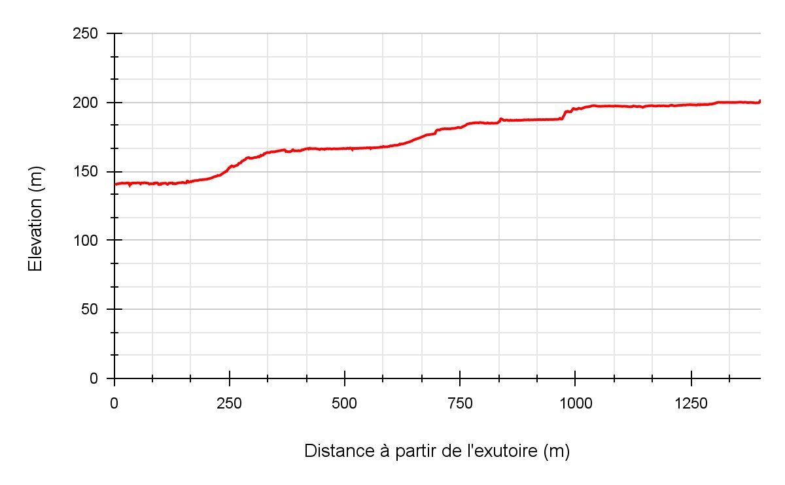
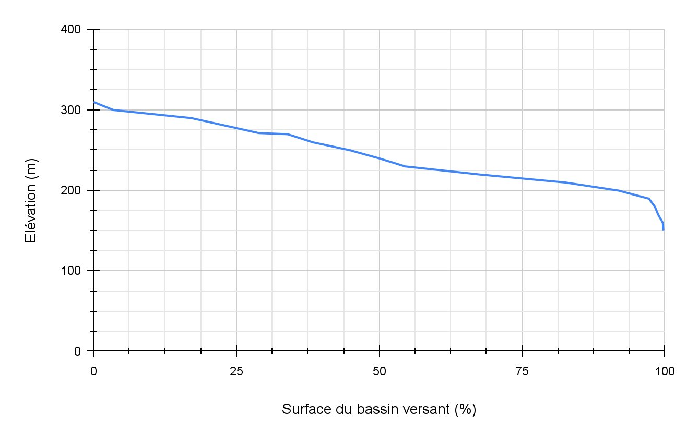
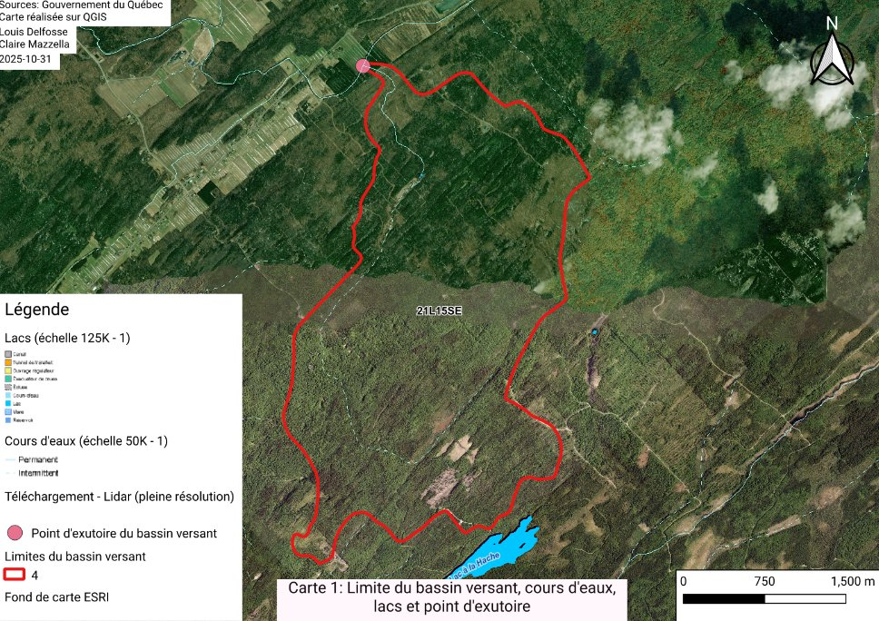

01Contexte
Pendant mon semestre d'échange à l'Université Laval (Québec), cours d'hydrologie : répondre, comme un bureau d'études, à l'appel d'offres fictif d'une municipalité qui veut mieux gérer les eaux d'un bassin versant.
02Mon rôle
Projet en binôme : traitement des données publiques du Québec sous QGIS, calculs, cartes et rapport.
03Caractériser le bassin
- Délimitation du bassin et de son point de sortie (exutoire) à partir du modèle numérique de terrain lidar.
- Superficie de 8,1 km², altitude de 140 à 308 m, pente moyenne de 12 %, cours d'eau principal de 1,4 km.
- Occupation du sol : environ 95 % de forêt, quelques milieux humides et un petit lac.


04Les cartes


Données : Gouvernement du Québec. Fond de carte : ESRI.
05Ce que j'en retiens
- Prendre en main un logiciel SIG et des données publiques réelles, en autonomie et dans un autre système universitaire.
- Relier des cartes à des grandeurs physiques utiles (pente, surface, profil) pour décrire le comportement de l'eau.